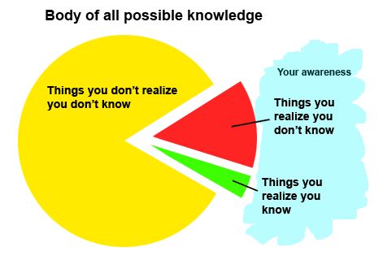

Be a Good Developer
Created by Timothy Overly using reveal.js
Pieces Involved

- The Code
- The Design
- The Process
- The Person
My personal feeling is that this is how any further improvement of the world will be done: by individuals making Quality decisions and that's all.
Art is anything you can do well. Anything you can do with Quality.
-Robert M. Pirsig
CODE IS ART
Institutional Systems for Quality
- Degrees
- Certificates
- TDD
- Agile
- XP
Do they work?
Mileage may vary
Qualities
- Creative
- Careful
- Resourseful
- blah blah blah
The Person!
But HOW?
Learn more syntax?
Learn more design patterns?
Learn another framework!?
Tell Me!
Through Enlightenment
It is a journey
...each step is higher
What is Enlightenment?

Main Paths
- Explicit
- Observation
- Discovery
- Failure
Habits to Achieve Enlightenment
1. Own the Problem
YOU are the answer.
Don't copy paste it.
2. Be a Scientist
Ask the Right Questions.
...they should eliminate possibilities,
...and be of high return
Are there bad questions?
Lets say some could be better
and they could be directed internally
What is a bad questions?
- How do I do that?
- What do I do next to fix this problem?
What is a good questions?
- I was going to implement X, like this. See any obvious issues?
- I am having trouble finding Y, have a resource for a starting point?
3. See the issues.
Look around you.
Links
- https://www.youtube.com/watch?v=JIWvpPD3yQw
- https://github.com/spidasoftware/MakeYourJobEasy
- http://www.confreaks.com/videos/2381-rmw2013-nobody-will-train-you-but-you